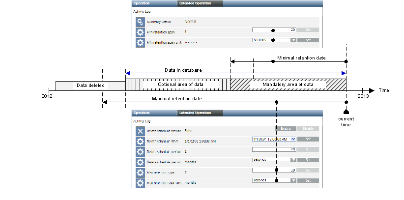
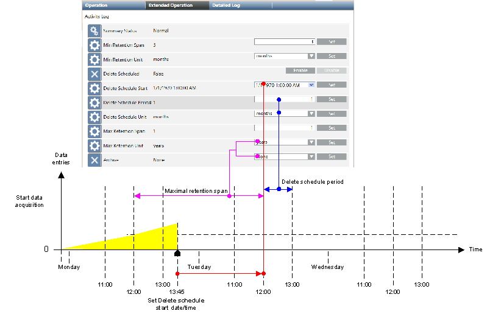
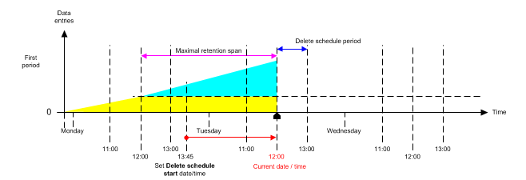
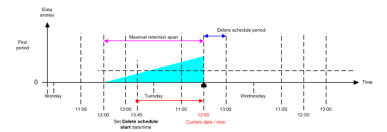
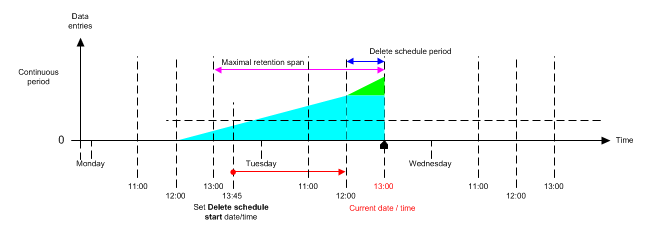
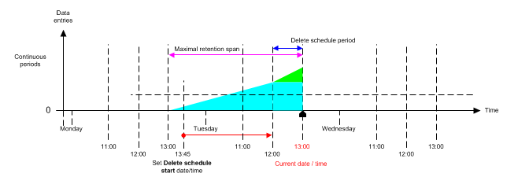
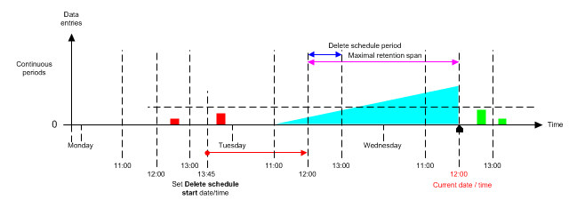
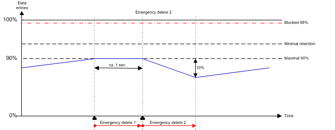

Concept of Deleting History Data
The amount of data to be saved differs depending on project size and activity. The History Database can store a maximum of 10 GB of data for SQL Server Express and 250 GB for SQL Server. For information on the size of the notification database, see Database Information Expander in Notification Database Configuration.
This data limit is more likely to be reached the more data you need to save. You can periodically delete the oldest data to avoid this. The settings and workflows are carried out in Desigo CC and are described in the Deleting After Custom Retention Period section.
Why Delete?
Desigo CC must ensure that the application can run and is stable. This requirement cannot be guaranteed when the History Database is full and data can no longer be saved. For this reason, history data can be deleted as part of a multi-stage concept.
- Deletion dependent on date or data volume
- When a time interval is reached, all data older than the maximum retention span is deleted, for example 3 months.
- The ranges defined in the minimum retention span must not be deleted.
- Emergency delete 1
- If the database is 90% full, the data is deleted to the minimum retention span for example one month.
- Emergency delete 2
- If emergency delete 1 is not enough to archive below 90% of maximum database capacity, an additional 10% of the data is deleted per data group.
- Lock database
- The database is locked exclusively for write when 98% full. This occurs when more data arrives than can be deleted. Incoming data is then saved to the hard drive of Desigo CC as temporary storage.
- Manual delete
- Manually deleting history data is possible using the System Management Console. This can be carried out individually for each data group.
NOTICE

Legal Guidelines
Consider the relevant regulations on data storage requirements when entering your settings.
Data Limits of History Database
Desigo CC supports two types of keeping the data limits:
- Maximum timeframe
- Minimum timeframe
Maximum timeframe
At the time of deletion, all data older than the maximum retention date. In the following figure, less data would need to be deleted according to the setting for maximum retention date.
Minimum timeframe
At the time of deletion, no data newer than minimum retention date.

After deletion, the existing data consists of a mandatory (fixed) and an optional (variable) data range. The variable data range is dependent on the amount of data, as well as the point in time when it was saved. As a result, no exact statement can be made on the size of the History Database following deletion.
NOTICE
Deleting Mandatory Data
If minimal retention and maximal retention are not set properly, data from the mandatory range is also deleted. This is also true when maximal retention is lower than minimal retention.
Data Delete by Time Interval
Defining a time interval prevents overflow of the History Database. Note the following when defining a time interval:
- Legal guidelines
- Is SQL Server or SQL Server Express used?
- Defined database size
- Possible data volume within the time interval
Time Interval Concept
For simplicity reasons, the following workflow example only shows the influence of Maximal retention span on data deletion.
Step 1
In the Extended Operation tab, the time interval is defined on Monday at 1:45 pm (blue = 1 hour), time period (pink = 1 day) and start time (red = Tuesday 12:00). Historical data (yellow) is already saved in the History Database at this time.
NOTE: A time period of weeks, months, or longer must be selected depending on the period of the historical data to be saved to trace results. You must ensure that necessary data capacity is nevertheless available in the database.

Step 2
The delete process for the data starts if the set start time (Tuesday 12:00) is reached.

Step 3
Historical data [yellow] outside the time period (Monday/12:00 – Tuesday/12:00) is deleted. Historical data (blue) within the time period is not deleted.

Step 4
New historical data is saved during the next time interval (green).

Step 5
All historical data outside the time period (13:00 – 13:00) is deleted once the end of the time interval (13:00) is reached.

Exception
Older historical data (red) that is subsequently saved to the History Database is deleted from the History Database as part of the next deletion (for example, Wednesday 12:00). Historical data with a timestamp in the future (green) are sorted into the applicable time period at a later date.

NOTICE
Data Loss
Prior to deleting data from the database, make sure data is backed up again following storage of older history data. This is the only way to later attempt to partially reconstruct the data.
Values and Data Capacity Settings
The following tables provide general guidelines for the various data volumes that are possible in a short term storage while operating prior to executing an emergency delete. An average value of 0.4 KB per data entry is assumed to calculate the database storage used. The effective number of saved data entries may be higher than indicated in the tables.
The applied settings depend strongly on the maximum entries per day, data group, legal regulations, and SQL Server used (maximum of 10 GB for SQL Server Express or 250 GB for SQL Server).

NOTE:
SQL Server Express is not suitable if you use Minimal retention span and anticipate a large amount of data.
Settings with Maximum Timeframe Only

NOTE:
When applying settings, remember that an emergency delete occurs at 90% of database capacity.
Use the following table if the data volumes must be more precisely calculated.
User Storage per Data Group and Lines Rows | |
Data group | KB per data entry |
Time Series | 0.057 |
Activity log | 0.37 |
Alarm Log | 0.38 |
Incidents | 0.21 |
Emergency Delete
The History Database collects history data over an extended time period. This may result in a full History Database that can no longer accept new data. A database becomes full when:
- Data is never deleted
- Large volumes of data are coming in
- Deletion is misconfigured
- Deletion is disabled
To ensure a database is not blocked and Desigo CC continues to be stable, data is deleted as part of a three-tiered concept:
- Emergency delete 1
- Emergency delete 2
- Lock database
Emergency Delete 1
- Emergency delete 1 is triggered when 90% of the database capacity is reached.
- The amount of data for deletion is based on the settings for minimal retention date.
NOTE 1:
Emergency delete 1 is repeated if no subsequent deletion processes follow (by time interval or manually).
Emergency Delete 2
If Emergency delete 1 does not delete a sufficient number of data entries, an additional 10% is deleted per data group. Upon Emergency delete 2, the settings for minimal retention date no longer apply.

NOTE:
When Emergency delete 2 is enabled, legal regulations for data retention may no longer be satisfied.
Lock Database
If the database cannot delete the required number of data entries, the History Database is locked exclusively at 98% full. This lock ensures that the database is not filled up with additional data and Desigo CC continues to run.
History data not saved during this time is saved temporarily to the Desigo CC hard drive [Installation Drive]:\[Installation Folder]\[Project Name]\Data\*.HD2.